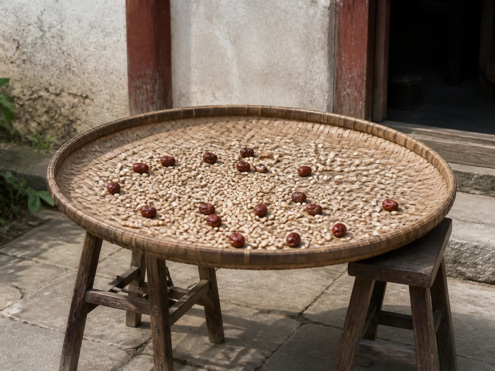

The Bamboo Drying Tray in Autumn Sun
A broad bamboo tray crossed the courtyard after the End of Heat, carrying beans and red dates into a clear patch of late-August sun.

The tray meets morning sun
Two hands carried the tray level through the narrow doorway. Its rim was broad enough to grip, but the diameter required attention at the wooden frame and the turn into the courtyard. Outside, the tray settled across two low stools where air could pass beneath the bamboo as sunlight reached the weave above.
The solar term commonly translated as End of Heat arrives around August 23, but its name does not promise a cool afternoon. Late-summer humidity, sudden rain, and strong sun can share the same week. The household task therefore began with the sky: spread only what could be gathered quickly if the light changed.
One surface for many tasks
Pale beans moved outward under the flat of a palm, leaving no deep piles at the center or rim. Red dates were turned one by one so their wrinkled sides met the light. A shallow woven tray made both sorting and carrying possible without transferring the ingredients to another container.
Bedding Across the Courtyard Rail also depends on a clear-weather window, while The Dried Loofah Beside the Kitchen Sink begins with a plant left until its fibers are dry. The bamboo tray joins those records through timing: household materials move into sun, remain under watch, and return before damp air settles.
The last handful gathered
During the day, the patch of sun crossed the courtyard stones and shortened against the wall. The stools shifted once, lifting the tray without disturbing its thin layer. Fingers removed a stem, a split bean, and the small pieces that had passed unnoticed indoors.
Before evening, the dates and beans were gathered toward the center and tipped into separate jars. The empty tray was brushed along the direction of its weave, then leaned upright beneath the eaves. Its round face caught the final light without holding anything, dry and ready for the next clear morning.